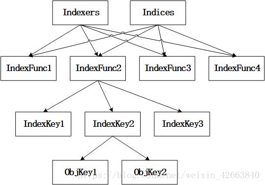

Indexer¶
Indexer 是 Informer 中一部分，Informer 在 client-go 中是非常重要的部分，但是由于 Informer 内容比较庞大，我们这里先介绍 Indexer，从字面上看是索引器的意思，他所在的位置就是 Informer 的 LocalStore，其实 Indexer 就是存储。

和数据库类似索引和存储是息息相关的，索引构建在存储之上，可以让我们按照某些条件查询数据的时候会很快。
在了解 Indexer 之前我们需要先看几个重要的类型来了解 Indexer 是如何实现索引的：
// client-go/tools/cache/index.go
// IndexFun 知道如何为对象提供索引值，说白了就是计算对象的索引，传入对象，输出字符串索引数组
type IndexFunc func(obj interface{}) ([]string, error)
type Index map[string]sets.String // 每种计算索引的方式会输出多个索引(数组)，而多个目标可能会算出相同索引
// 索引键 -> 对象键set集合
// Indexers 映射一个名字到一个 IndexFunc
type Indexers map[string]IndexFunc // 计算索引的函数有很多，用名字来进行分类，就是索引分类
// 分类1(特征1) -> 获取对象的索引键(数组)
// Indices 映射一个名字到一个Index
type Indices map[string]Index // 由于有多种计算索引的方式，那就又要按照计算索引的方式组织索引
// 分类1(特征1) -> 所有索引Indexers：分类1 -> IndexFunc([indexKey1，indexKey2....]) Indices： 分类1 -> Index indexKey1 -> [objKey1, objKey2...] indexKey2 -> [objKey3, objKey4...]
上面几种类型理解起来有点费劲，命名看上去也差不多。索引的目的就是为了快速查找，这个是毋庸置疑的，比如我们需要查找某个节点上的所有 Pod，那就要 Pod 按照节点名称排序，对应上面的 Index 类型就是 map[nodename]sets.podname，但是我们可能有很多种查找方式，这就是 Indexers 这个类型的作用了。

Indexers 和 Indices 都是按照 IndexFunc 分组，每个 IndexFunc 输出多个 IndexKey，产生相同 IndexKey 的多个对象存储在一个集合中。为了明确意义，我们这里先统一几个概念：
- IndexFunc1...这些都是索引函数的名称，我们称之为索引类，大概意思就是把索引分类了
- IndexKey1...这些是同一个对象在同一个索引类中的多个索引键值，我们称之为索引键
- ObjKey1...这些是对象键，每个对象都有唯一的名称
现在我们再来查看 Indexer 与索引相关的接口定义：
// client-go/tools/cache/index.go
// Indexer 是一个存储接口，可以让我们使用多个索引函数来获取对象列表
type Indexer interface {
Store // 继承了 Storge 这个接口（client-go/tools/cache/store.go）
// indexName 索引类，obj 是对象，计算 obj 在 indexName 索引类中的索引键
// 通过索引键把所有对象取出来，基本就是获取符合 obj 特征的所有对象，所谓的特征就是对象在索引类中的索引键
Index(indexName string, obj interface{}) ([]interface{}, error)
// indexKey 是 indexName 索引类中的一个索引键，函数返回 indexKey 指定的所有对象键
// 这个对象键是 Indexer 内唯一的，在添加的时候会技术
IndexKeys(indexName, indexKey string) ([]string, error)
// 获取 indexName 索引类中的所有索引键
ListIndexFuncValues(indexName string) []string
// 与 Index 函数类似，只是返回值不是对象键了，而是所有对象
ByIndex(indexName, indexKey string) ([]interface{}, error)
// 返回 Indexers
GetIndexers() Indexers
// 添加 Indexers 到存储(store)中，即添加索引分类
AddIndexers(newIndexers Indexers) error
}上面是 Indexer 这个接口的定义，其中继承了 Store 这个接口，我们再来看看该接口的定义：
// client-go/tools/cache/store.go
type Store interface {
// 添加对象
Add(obj interface{}) error
// 更新对象
Update(obj interface{}) error
// 删除对象
Delete(obj interface{}) error
// 列举对象
List() []interface{}
// 列举对象键
ListKeys() []string
// 获取 obj 相同对象键的对象，对象键是通过对象计算出来的字符串
Get(obj interface{}) (item interface{}, exists bool, err error)
// 通过对象键直接获取对象
GetByKey(key string) (item interface{}, exists bool, err error)
// 用 []interface{} 替换 Store 存储的所有对象，相当于会删除存储中原有的所有内容，然后再添加新的对象
Replace([]interface{}, string) error
// 重新同步
Resync() error
}从上面接口中我们可以看出每个对象都要有唯一的键，键的计算方式就要依赖具体的实现了。接下来我们就来看看 Indexer 的具体实现。
cache¶
cache 是 Indexer 中非常经典的一种实现，所有的对象缓存在内存中，从名称来看可以知道是属于包内私有的内型，外部无法直接使用，需要通过专用的函数来创建，cache 的定义如下所示：
// client-go/tools/cache/store.go
// cache 仅用于下面两个方面：
// 1. 通过 keyFunc 计算对象键值
// 2. 调用 ThreadSafeStorage 接口的方法
type cache struct {
// 一个线程安全的 Store
cacheStorage ThreadSafeStore
// keyFunc 是一个用来计算对象键的函数
keyFunc KeyFunc
}
// KeyFunc 的定义如下所示：用来计算对象键的函数
type KeyFunc func(obj interface{}) (string, error)从 cache 结构体可以看出创建该对象的时候我们需要指定这个 KeyFunc 计算对象键的函数这个字段。另外一个就是一个线程安全的 ThreadSafeStore 对象。
ThreadSafeStore¶
从 cache 的定义可以看出所有的功能基本上都是通过 ThreadSafeStore 这个类型来实现的，这里我们就先来看下该接口的定义：
// client-go/tools/cache/thread_safe_store.go
type ThreadSafeStore interface {
Add(key string, obj interface{})
Update(key string, obj interface{})
Delete(key string)
Get(key string) (item interface{}, exists bool)
List() []interface{}
ListKeys() []string
Replace(map[string]interface{}, string)
Index(indexName string, obj interface{}) ([]interface{}, error)
IndexKeys(indexName, indexKey string) ([]string, error)
ListIndexFuncValues(name string) []string
ByIndex(indexName, indexKey string) ([]interface{}, error)
GetIndexers() Indexers
AddIndexers(newIndexers Indexers) error
Resync() error
}我们仔细观察会发现该接口和上面的 Indexer 基本上是一致的，不同的是 Indexer 中的 CRUD 的相关参数是对象，而这里是提供对象键。ThreadSafeStore 接口的对应实现结构体定义如下所示：
// client-go/tools/cache/thread_safe_store.go
// threadSafeMap 实现了 ThreadSafeStore 接口
type threadSafeMap struct {
lock sync.RWMutex // 读写锁，读多写少用读写锁性能更好
items map[string]interface{} // 存储对象的字典：对象键：对象
indexers Indexers // 索引分类
indices Indices // 快速索引表，通过所以可以快速找到对象键，然后再从items中取出对象
}再次强调下索引键和对象键这两个重要的概念，索引键是用于对象快速查找的，经过索引键在 map 中排序查找会更快；对象键是对象在存储中的唯一命名，对象是通过名字+对象的方式存储的。接下来看下具体的实现函数：
// client-go/tools/cache/thread_safe_store.go
// 添加对象函数
func (c *threadSafeMap) Add(key string, obj interface{}) {
// 加锁，因为是写操作，所以全部互斥
c.lock.Lock()
defer c.lock.Unlock()
// 取出老对象
oldObject := c.items[key]
// 写入新对象
c.items[key] = obj
// 添加了新的对象所以需要更新索引
c.updateIndices(oldObject, obj, key)
}
// 更新对象函数，和Add函数一模一样
func (c *threadSafeMap) Update(key string, obj interface{}) {
c.lock.Lock()
defer c.lock.Unlock()
oldObject := c.items[key]
c.items[key] = obj
c.updateIndices(oldObject, obj, key)
}
// 删除对象
func (c *threadSafeMap) Delete(key string) {
c.lock.Lock()
defer c.lock.Unlock()
// 判断对象是否存在
if obj, exists := c.items[key]; exists {
// 删除对象的索引
c.deleteFromIndices(obj, key)
// 删除对象本身
delete(c.items, key)
}
}
// 获取对象
func (c *threadSafeMap) Get(key string) (item interface{}, exists bool) {
c.lock.RLock()
defer c.lock.RUnlock()
item, exists = c.items[key]
return item, exists
}
// 列举对象
func (c *threadSafeMap) List() []interface{} {
c.lock.RLock()
defer c.lock.RUnlock()
// 直接遍历对象map
list := make([]interface{}, 0, len(c.items))
for _, item := range c.items {
list = append(list, item)
}
return list
}
// 列举对象键
func (c *threadSafeMap) ListKeys() []string {
c.lock.RLock()
defer c.lock.RUnlock()
// 同样遍历对象map，只需要对象键值
list := make([]string, 0, len(c.items))
for key := range c.items {
list = append(list, key)
}
return list
}
// 替换所有对象，相当于重新构造了一次
func (c *threadSafeMap) Replace(items map[string]interface{}, resourceVersion string) {
c.lock.Lock()
defer c.lock.Unlock()
// 直接覆盖以前的对象
c.items = items
// 重建所有索引
c.indices = Indices{}
for key, item := range c.items {
c.updateIndices(nil, item, key)
}
}然后就是和索引相关的函数，比如 Index 函数：
// client-go/tools/cache/thread_safe_store.go
// Index 通过指定的索引函数计算对象的索引键，然后把索引键的对象全部取出来
func (c *threadSafeMap) Index(indexName string, obj interface{}) ([]interface{}, error) {
// 只读，所以用读锁即可
c.lock.RLock()
defer c.lock.RUnlock()
// 从索引分类中取出indexName这个分类索引函数
indexFunc := c.indexers[indexName]
if indexFunc == nil {
return nil, fmt.Errorf("Index with name %s does not exist", indexName)
}
// 获取对象的索引键
indexKeys, err := indexFunc(obj)
if err != nil {
return nil, err
}
// 取出indexName这个分类的所有索引
index := c.indices[indexName]
// 声明对象的对象键集合
var returnKeySet sets.String // string类型的set
if len(indexKeys) == 1 {
// 在大多数情况下，只有一个值匹配
// 优化下最常见的路径 - 此处不需要重复数据消除
returnKeySet = index[indexKeys[0]]
} else {
// 需要对返回列表进行消重
returnKeySet = sets.String{}
for _, indexKey := range indexKeys {
for key := range index[indexKey] {
returnKeySet.Insert(key)
}
}
}
// 通过对象键把对象取出来
list := make([]interface{}, 0, returnKeySet.Len())
for absoluteKey := range returnKeySet {
list = append(list, c.items[absoluteKey])
}
return list, nil
}比如我们要取出一个节点上的所有 Pod，这就是一个特征，indexName 就是一个特征名，indexFunc = c.indexers[indexName] 就是获取到索引计算函数，然后通过这个函数可以计算得到这个对象的索引键，然后通过 indices 取出该特征下面的所有索引，然后循环索引键，通过索引把所有的对象键取出来，然后通过对象键把所有对象取出来。
然后
// client-go/tools/cache/thread_safe_store.go
// ByIndex 直接通过索引键来获取对象列表，和上面比较类似
func (c *threadSafeMap) ByIndex(indexName, indexKey string) ([]interface{}, error) {
c.lock.RLock()
defer c.lock.RUnlock()
// 获取 indexName 的索引分类函数
indexFunc := c.indexers[indexName]
if indexFunc == nil {
return nil, fmt.Errorf("Index with name %s does not exist", indexName)
}
// 获取分类的所有索引
index := c.indices[indexName]
// 直接通过索引键去取所有的对象键
set := index[indexKey]
// 遍历对象键输出对象
list := make([]interface{}, 0, set.Len())
for key := range set {
list = append(list, c.items[key])
}
return list, nil
}这个函数和上面的 Index 函数基本类似，功能更加简单，直接通过索引键获取全部对象。然后接下来是 IndexKeys 和 ListIndexFuncValues 这两个函数，如下所示：
// client-go/tools/cache/thread_safe_store.go
// IndexKeys 根据索引键获得对应的对象键列表
func (c *threadSafeMap) IndexKeys(indexName, indexKey string) ([]string, error) {
c.lock.RLock()
defer c.lock.RUnlock()
// 获得索引分类的索引键计算函数
indexFunc := c.indexers[indexName]
if indexFunc == nil {
return nil, fmt.Errorf("Index with name %s does not exist", indexName)
}
// 获取索引分类的所有索引
index := c.indices[indexName]
// 通过索引键获取所有的对象键
set := index[indexKey]
return set.List(), nil
}
// client-go/tools/cache/thread_safe_store.go
// 用来获取索引分类中的所有索引键
func (c *threadSafeMap) ListIndexFuncValues(indexName string) []string {
c.lock.RLock()
defer c.lock.RUnlock()
// 根据索引分类获取所有的索引
index := c.indices[indexName]
names := make([]string, 0, len(index))
// 遍历输出索引键
for key := range index {
names = append(names, key)
}
return names
}其他函数都比较简单，除此之外，还有两个非常重要的函数，用来更新索引的操作，如下所示：
// client-go/tools/cache/thread_safe_store.go
// updateIndices 当有对象添加或者更新时，需要更新索引，因为调用该函数的函数已经加锁了，所以这个函数没有加锁操作
func (c *threadSafeMap) updateIndices(oldObj interface{}, newObj interface{}, key string) {
// 如果有老对象，那么就要先删除老对象的索引
if oldObj != nil {
c.deleteFromIndices(oldObj, key)
}
// 遍历所有的分类索引函数，因为要为对象在所有的索引分类中创建索引键
for name, indexFunc := range c.indexers {
// 计算新对象的索引键
indexValues, err := indexFunc(newObj)
if err != nil {
panic(fmt.Errorf("unable to calculate an index entry for key %q on index %q: %v", key, name, err))
}
// 获得索引分类的所有索引
index := c.indices[name]
// 为空说明这个索引分类还没有任何索引
if index == nil {
// 初始化一个空索引
index = Index{}
c.indices[name] = index
}
// 遍历索引键
for _, indexValue := range indexValues {
// 获取索引键的对象键集合
set := index[indexValue]
// 为空说明这个索引键下面还没有任何对象
if set == nil {
// 创建对象键集合
set = sets.String{}
index[indexValue] = set
}
// 把对象键插入到对象键集合中
set.Insert(key)
}
}
}
// deleteFromIndices 删除对象的索引
func (c *threadSafeMap) deleteFromIndices(obj interface{}, key string) {
// 遍历所有索引分类函数
for name, indexFunc := range c.indexers {
// 计算对象的索引键
indexValues, err := indexFunc(obj)
if err != nil {
panic(fmt.Errorf("unable to calculate an index entry for key %q on index %q: %v", key, name, err))
}
// 获取索引分类的所有索引
index := c.indices[name]
if index == nil {
continue
}
// 遍历对象的索引键
for _, indexValue := range indexValues {
// 获取索引键对应的对象键集合
set := index[indexValue]
if set != nil {
// 把对象键从集合中删除
set.Delete(key)
}
}
}
}上面就是关于 ThreadSafeStore 这个接口的一些说明以及对应的实现。最主要的还是需要理解 Indices、Indexers、Index 以及 IndexFunc 这几个类型的定义。
上面我提到了 cache 的大部分实现都是通过 ThreadSafeStore 操作的，所以 cache 本身比较简单，可以在client-go/tools/cache/store.go 下面查看具体的实现。
索引函数¶
通过上面的分析，我们可以了解到 Indexer 的核心就是各种索引函数的定义了。在 Kubernetes 中主要有以下几种索引函数：
MetaNamespaceIndexFunc，定义在client-go/tools/cache/index.go下面，是一个默认的索引函数，它基于对象的命名空间进行索引，也就是所有对象以 namespace 作为索引键。indexByPodNodeName，定义在kubernetes/pkg/controller/daemon/daemon_controller.go下面，该索引函数计算的是 Pod 对象所在节点的名字。
MetaNamespaceIndexFunc 是默认的索引函数，也就是在索引中大部分就一个分类，这个分类的索引键就是 namesapce。对应的 Indexers 如下所示：
Indexers{"namespace": MetaNamespaceIndexFunc}MetaNamespaceIndexFunc 函数定义如下：
// client-go/tools/cache/index.go
func MetaNamespaceIndexFunc(obj interface{}) ([]string, error) {
meta, err := meta.Accessor(obj)
if err != nil {
return []string{""}, fmt.Errorf("object has no meta: %v", err)
}
return []string{meta.GetNamespace()}, nil
}Indexers：namespace -> IndexFunc([kube-system]) Indices： namespace -> Index (kube-system -> [objKey1, objKey2...])
可以看到这个索引函数其实很简单，就是返回资源对象的命名空间而已。那么有人肯定会问，如果这样的话，所有的对象都存在一个 namesapce 索引键下面，这样的效率岂不是太低了？其实 client-go 为每类对象都创建了 Informer（Informer 内有 Indexer），所以即便存储在相同 namesapce 下的对象都是同一类，这个问题自然也就没有了。
另外大家一定要区分 MetaNamespaceIndexFunc 和 MetaNamespaceKeyFunc 的区分，第一个索引键计算函数，第二个是对象键计算函数，第一个返回的是 namespace，第二个返回的是对象包含 namespace 在内的对象全称。MetaNamespaceKeyFunc 函数的定义如下所示：
// client-go/tools/cache/store.go
// MetaNamespaceKeyFunc 是一个默认的 KeyFunc，它知道如何为实现 meta.Interface 接口的 API 对象生成键。键使用格式 <namespace>/<name>（除非<namespace>为空，值就是 <name>）
func MetaNamespaceKeyFunc(obj interface{}) (string, error) {
if key, ok := obj.(ExplicitKey); ok {
return string(key), nil
}
meta, err := meta.Accessor(obj)
if err != nil {
return "", fmt.Errorf("object has no meta: %v", err)
}
if len(meta.GetNamespace()) > 0 {
return meta.GetNamespace() + "/" + meta.GetName(), nil
}
return meta.GetName(), nil
}接下来我们就来和大家一起来分析 Informer 在 client-go 中的使用。